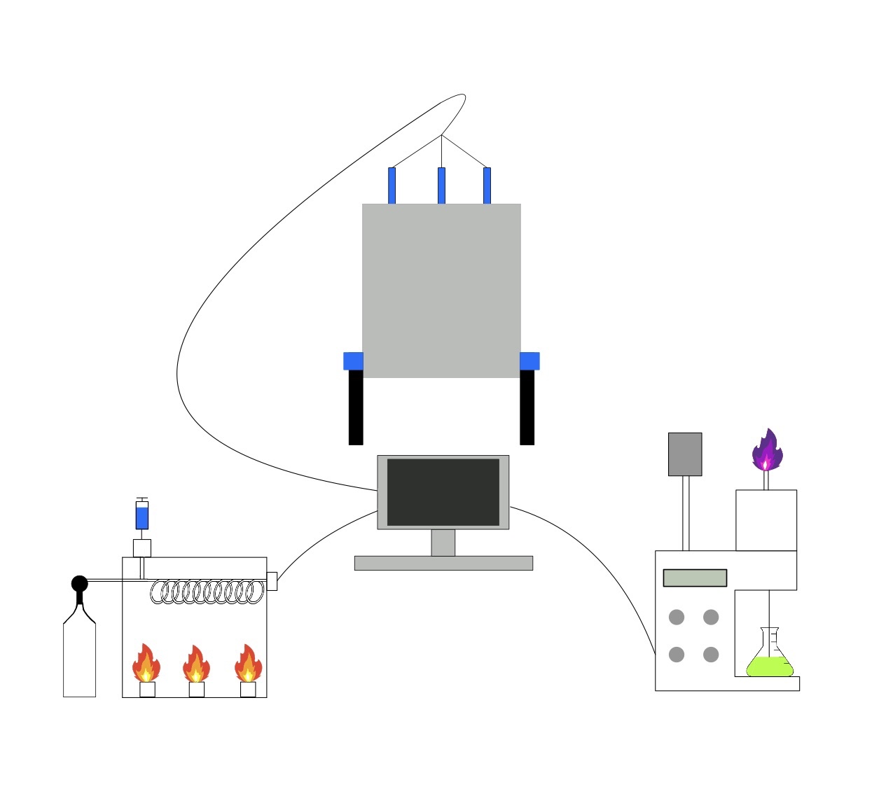
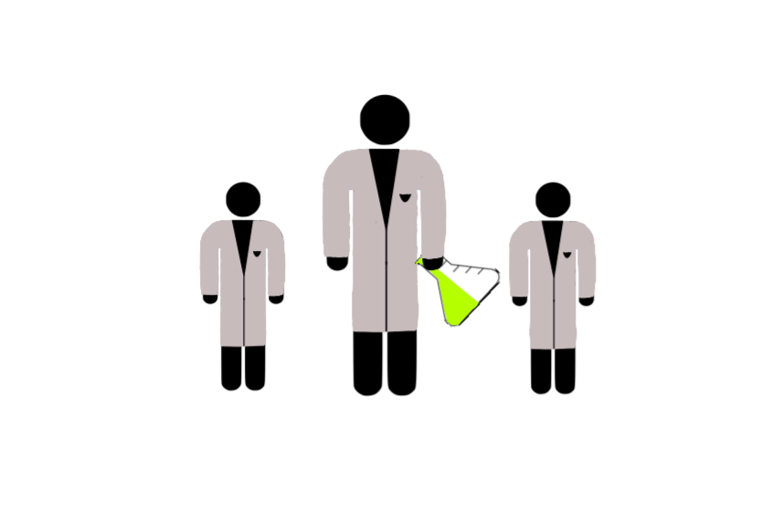

The reaction bench: receives an input vessel container and
perform a series of reactions on the materials in that vessel.

The extraction bench: isolates and extracts certain materials
from an inputted vessel containing multiple materials.

The distillation bench: a set of experimentation
aimed at isolating a requested desired material.

The characterization bench: method in which an agent or
lab manager can look inside vessel containers.

The Lab Manager: organizes and dictates the activity of
bench agents, vessels, benches, and environments.